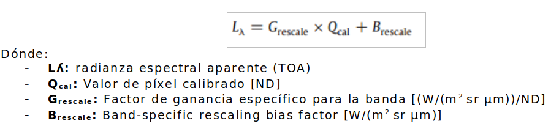
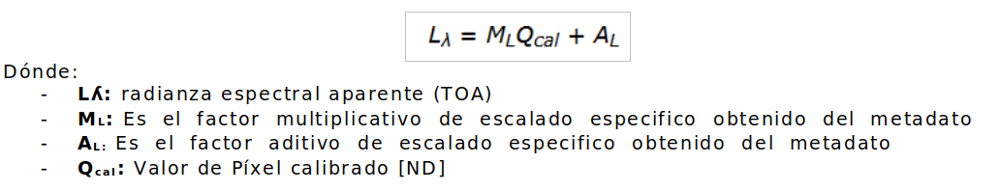

Calibración radiométrica
Uno de los procesos importantes para trabajar con los datos provenientes de imágenes satelitales consiste en realizar una adecuada calibración de la información, esto con el fin de evitar errores en la información espectral que se busca utilizar.
En un gran número de sensores (TM, ETM+, OLI, ALI, etc.) se establece la conversión a radianza espectral en base a una relación lineal existente entre el nivel digital bruto y los valores de radianza. Aunque siempre se deben consultar los manuales de usuario de cada uno de los productos que estemos empleando.
De esta forma la ecuación que describe la radianza espectral es (Chander et al., 2009):

En el caso del sensor OLI del satélite Landsat 8, la ecuación se describe de la siguiente forma (Landsat Mission, 2013):

Los datos para obtener la radianza espectral aparente, están disponibles en la información de cabecera de la imagen contenida en el archivo *.txt correspondiente al metadato y el cálculo puede generarse de forma manual utilizando cualquier módulo matemático de la imagen en un software SIG o de procesamiento de imágenes y datos, o también de forma automática. De igual manera, existen alternativas automáticas para calibración y corrección y módulos que pueden asociarse en diferentes plataformas como ENVI, ERDAS, PCI y también en QGIS.
Obra publicada con Licencia Creative Commons Reconocimiento Compartir igual 4.0